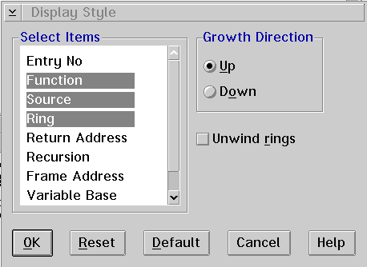

<HTML>
<HEAD>
<META HTTP-EQUIV="CONTENT-TYPE" CONTENT="TEXT/HTML; CHARSET=UTF-8">
<TITLE>Display style...</TITLE>
<STYLE>
PRE {
  FONT-FAMILY: Consolas, "Lucida Console", "Courier New", Courier, MONOSPACE;
}
</STYLE>
</HEAD>
<BODY>
<H1>Display style...</H1><!-- entering slot 401 -->
<P>
Displays the Display Style window, which allows you to select the type of
information you want displayed in the call stack and choose how the items
are to be displayed.
<P>
<!-- Unable to decode bitmap format -->
<P>
To use the Display Style window:<!-- lm: 0x2 3 -->
<UL>
<P>
<LI><!-- lm: 0x2 6 -->Select one or more of the items under<B> Select Items
</B>to display for each call stack entry. Each item causes a new column
to be added to the Call Stack window.
<P>
The following items are available:<!-- lm: 0x2 6 -->
<UL>
<BR>
<B>Entry No</B><!-- lm: 0x2 36 -->
<UL> Represents the position of the call
stack item in the list. Entry level 1 is the first function started.<!-- lm: 0x2 6 -->
</UL><B> Function
</B><!-- lm: 0x2 36 -->
<UL>Lists program name or the address of the function
call that created the new call stack entry.<!-- lm: 0x2 6 -->
</UL><B> Source
</B><!-- lm: 0x2 36 -->
<UL>Lists the component name that contains the function.
The name displayed corresponds with a name listed in the Components list
box in the Debug Session Control window.<!-- lm: 0x2 6 -->
</UL> Ring<!-- lm: 0x2 36 -->
<UL> Tells
the ring level (0, 2, or 3) at which this frame is established.<!-- lm: 0x2 6 -->
</UL><B> Return
Address</B><!-- lm: 0x2 36 -->
<UL> Indicates where execution will return
in that function.<!-- lm: 0x2 6 -->
</UL><B> Recursion</B><!-- lm: 0x2 36 -->
<UL> Lists
the recursion level.  0 is the first invocation.<!-- lm: 0x2 6 -->
</UL><B> Frame
Address</B><!-- lm: 0x2 36 -->
<UL> Indicates the start of the call stack
frame for that function.<!-- lm: 0x2 6 -->
</UL><B> Variable Base</B><!-- lm: 0x2 36 -->
<UL> Indicates
the end of the call stack frame for that function.<!-- lm: 0x2 6 -->
</UL><B> Size
</B><!-- lm: 0x2 36 -->
<UL>Indicates the size of the call stack frame for
that function.<!-- lm: 0x2 6 --><!-- lm: 0x2 3 -->
</UL><!-- lm: 0x2 6 -->
<UL>Select one of the following<B> Growth Direction
</B>radio buttons to determine how new items are displayed on the call stack.
<!-- lm: 0x2 6 --><B>Up</B><!-- lm: 0x2 21 -->
<UL> Displays new items at
the top of the Call Stack window.<!-- lm: 0x2 6 -->
</UL><B> Down</B><!-- lm: 0x2 21 -->
<UL> Displays
new items at the bottom of the Call Stack window.<!-- lm: 0x2 6 -->
</UL> Enable
the<B> Unwind rings</B> check box to have the debugger unwind the call stack
across ring (privilege) transitions.  This allows you to view the call sequence
from user applications into the kernel.<!-- lm: 0x2 1 -->
</UL>

<P><HR>

<A HREF="385_L5_Fonts.html">[Back: Fonts...]</A> <BR>
<A HREF="387_L5_Restoredefaults.html">[Next: Restore defaults]</A> 
</BODY>
</HTML>
